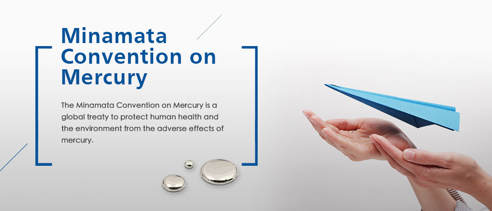

A better quality of living through Green Chemistry
{kind=link}
Most people don’t think too much about chemicals, but actually they are all around us. Many substances consist of chemicals, including the air that we breathe and the water that we drink. Some chemicals are natural, but most of them are artificial and may be harmful to human body.
In 2005, Hurricane Katrina struck the United States and destroyed hundreds of thousands of homes, so displaced people had to move into temporary housing. Later, some of them began experiencing headaches and nosebleeds due to formaldehyde exposure. This pungent chemical is commonly found in glue that holds many household products and pressed wood furniture together. It has been classified as a carcinogen since 2011 and has been linked to an increase in asthma and allergies in children. It has also been regulated as a toxic chemical by the Environmental Protection Administration in Taiwan.
However, there is another choice: natural adhesive. In particular, one made from soy proteins that have been modified to resemble the protein that some shellfish use to stick to rocks. A natural adhesive is now widely used in composite wood products in the U.S. Other companies are also developing more natural alternatives to hazardous industrial chemicals. This is a part of the Green Chemistry philosophy.
Green Chemistry is a way of rethinking how to develop products and processes that are more environmentally friendly, better for people’s health and yet are economically feasible. That includes reducing processing waste, using renewable materials and lessening the energy required to manufacture products. The 12 Principles of Green Chemistry lay out the goals of this approach to chemical research and the chemical industry. The first is prevention. It is better to prevent waste than to treat it or clean it up. Another principle encourages less hazardous chemical synthesis. Chemical reactions should be designed to be as safe as possible. Energy efficiency is encouraged as well as using chemicals made from renewable plant-based sources rather than petrochemical ones. Attention also needs to be paid to monitoring pollution in real time and choosing and developing chemical procedures that are safer and that minimize the risk of accidents.
There are challenges in meeting and holding to the principles of Green Chemistry, but this will spur new research and inspire the discovery of new chemistry. Green Chemistry can decrease pollution and increase the sustainable development of the earth, thus improving the quality of life for humans and animals for years to come.

Most people don’t think too much about chemicals, but actually they are all around us. Many substances consist of chemicals, including the air that we breathe and the water that we drink. Some chemicals are natural, but most of them are artificial and may be harmful to human body.
In 2005, Hurricane Katrina struck the United States and destroyed hundreds of thousands of homes, so displaced people had to move into temporary housing. Later, some of them began experiencing headaches and nosebleeds due to formaldehyde exposure. This pungent chemical is commonly found in glue that holds many household products and pressed wood furniture together. It has been classified as a carcinogen since 2011 and has been linked to an increase in asthma and allergies in children. It has also been regulated as a toxic chemical by the Environmental Protection Administration in Taiwan.
However, there is another choice: natural adhesive. In particular, one made from soy proteins that have been modified to resemble the protein that some shellfish use to stick to rocks. A natural adhesive is now widely used in composite wood products in the U.S. Other companies are also developing more natural alternatives to hazardous industrial chemicals. This is a part of the Green Chemistry philosophy.
圖片自適應

Youtube自適應
項目符號
- 毒物與化學物質管理政策、法規之研擬及協調。
- 毒物與化學物質國際合作、科技發展之策劃、推動、協調及執行。
- 毒物與化學物質綜合研究之策劃、推動、協調及執行。
- 毒物與化學物質相關國家標準之跨部會協調。
- 毒物與化學物質資訊系統之規劃、建置、資訊整合及運用分析。
- 毒物與化學物質邊境管理之規劃、協調及執行。
- 公告修正「高雄市和發產業園區環境影響說明書」審查結論一（一）3為「...營運期間則規劃滯洪池連接之鄰近綠地面積至少5公頃，營造淺塘或小山丘的地貌，使之有地形高低差，形成灘地，並於乾旱季缺水時，抽用滯洪池水以保草澤維持濕潤，以利生物棲留，...」。
數字編號
- 化學物質登錄專用名詞(文字連結)
- 既有化學物質清冊
- 化學物質登錄平臺
- 化學物質登錄措施及說明
- 化學物質登錄工具及說明
- 化學物質登錄表單
- 化學物質核准登錄資訊公開
- 貨品通關事前聲明確認平臺
- 毒藥物防治諮詢中心
- REACH國際化學品政策宣導網
- 美國環保署實驗室優良操作規範網頁
- 美國環保署毒理檢測規範網頁
- 公告修正「高雄市和發產業園區環境影響說明書」審查結論一（一）3為「...營運期間則規劃滯洪池連接之鄰近綠地面積至少5公頃，營造淺塘或小山丘的地貌，使之有地形高低差，形成灘地，並於乾旱季缺水時，抽用滯洪池水以保草澤維持濕潤，以利生物棲留，...」。
分享了各自的創業故事後，Deepblu 創辦人 Brad、PicCollage 創辦人 John、Mesh Ventures 創辦人 Ben 以論壇方式回答現場參與者關於「拿到資金之後」的問題。
標題H2：加嚴管理食安風暴化學品盤報管問 毒管法修正草案4+1
分享了各自的創業故事後，Deepblu 創辦人 Brad、PicCollage 創辦人 John、Mesh Ventures 創辦人 Ben 以論壇方式回答現場參與者關於「拿到資金之後」的問題。
標題H3：加嚴管理食安風暴化學品盤報管問 毒管法修正草案4+1
分享了各自的創業故事後，Deepblu 創辦人 Brad、PicCollage 創辦人 John、Mesh Ventures 創辦人 Ben 以論壇方式回答現場參與者關於「拿到資金之後」的問題。
標題H4：加嚴管理食安風暴化學品盤報管問 毒管法修正草案4+1
分享了各自的創業故事後，Deepblu 創辦人 Brad、PicCollage 創辦人 John、Mesh Ventures 創辦人 Ben 以論壇方式回答現場參與者關於「拿到資金之後」的問題。
h2. 標題文字樣式 副標題文字說明
h3. 標題文字樣式 副標題文字說明
h4. 標題文字樣式 副標題文字說明
h5. 標題文字樣式 副標題文字說明
靠左對齊文字。
置中對齊文字。
靠右對齊文字。
一般段落P
一般段落粗體
| 標題 | 標題 | 標題 | 標題 |
|---|---|---|---|
| 標題 | 資料資料資料 | 資料資料資料 | 資料資料資料 |
| 標題 | 文字連結 | 文字連結 | 文字連結 |
| 標題 |
數字編號資料
|
數字編號資料
|
項目符號資料
|
Attachment(s) for download
| Title | File size | Updated | download times |
|---|---|---|---|
| Chemical Substance Registration Platform.pdf | 3.1MB | 106-05-16 | 8 |
| Chemical Substance Registration Information and Disclosure.pdf | 0.91MB | 106-05-16 | 1000 |